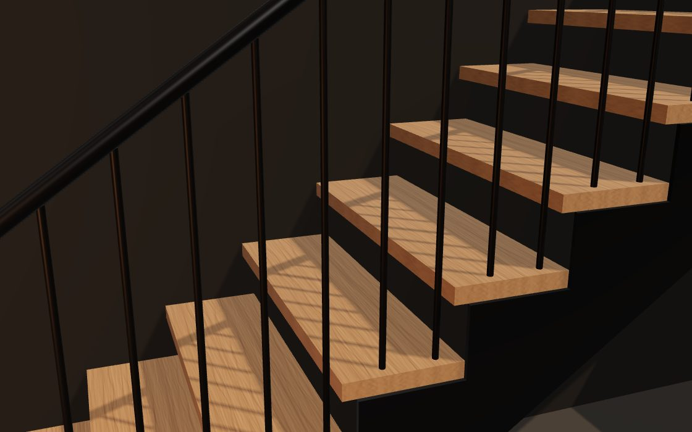
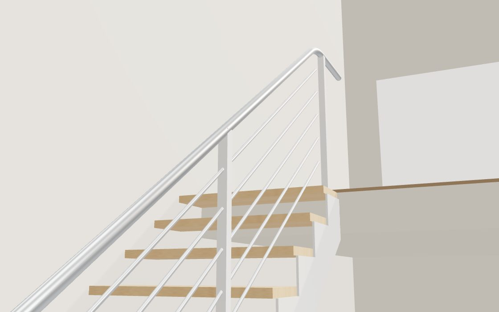
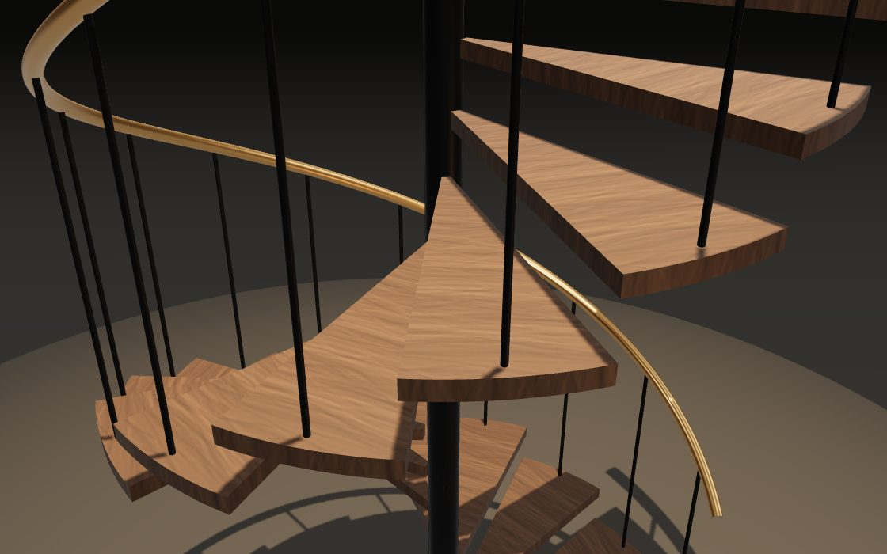
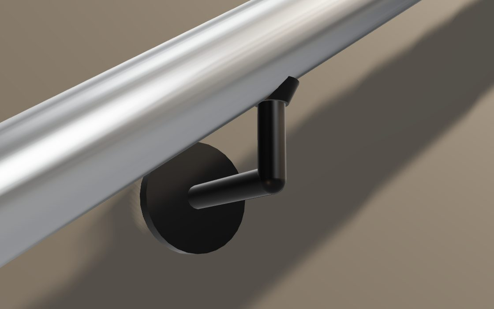
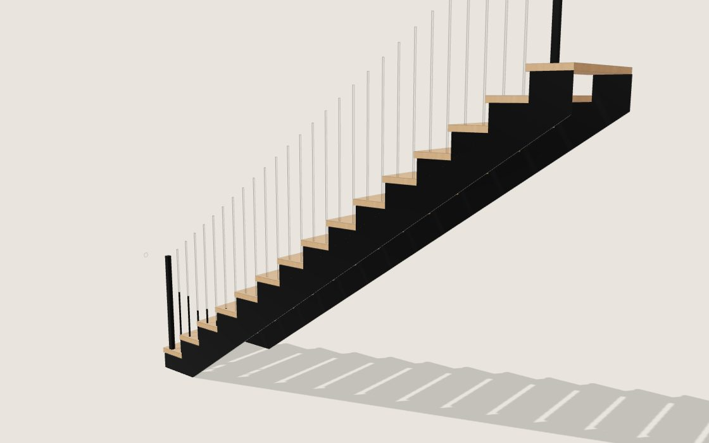
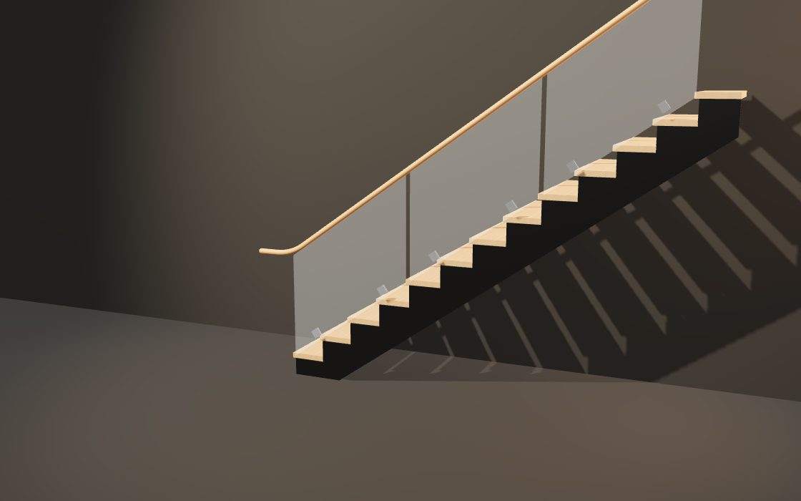
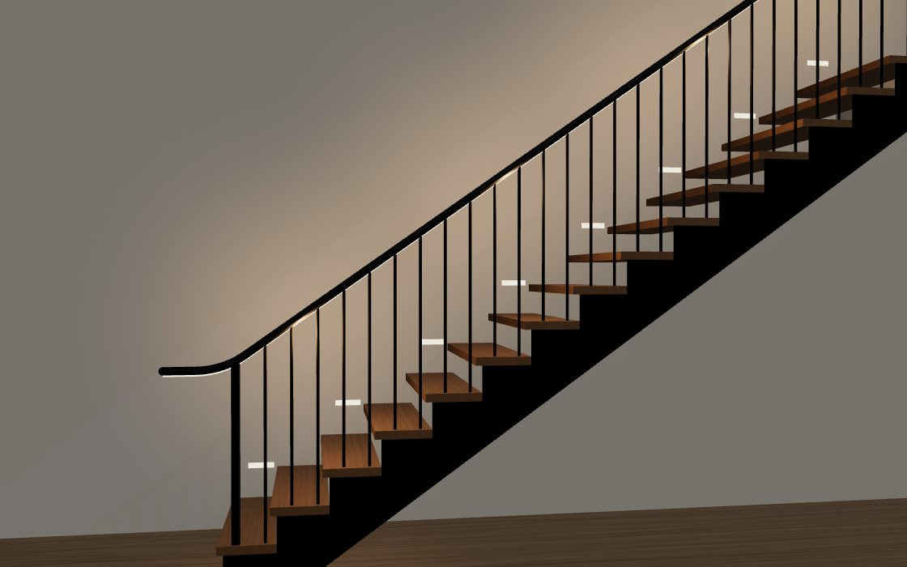
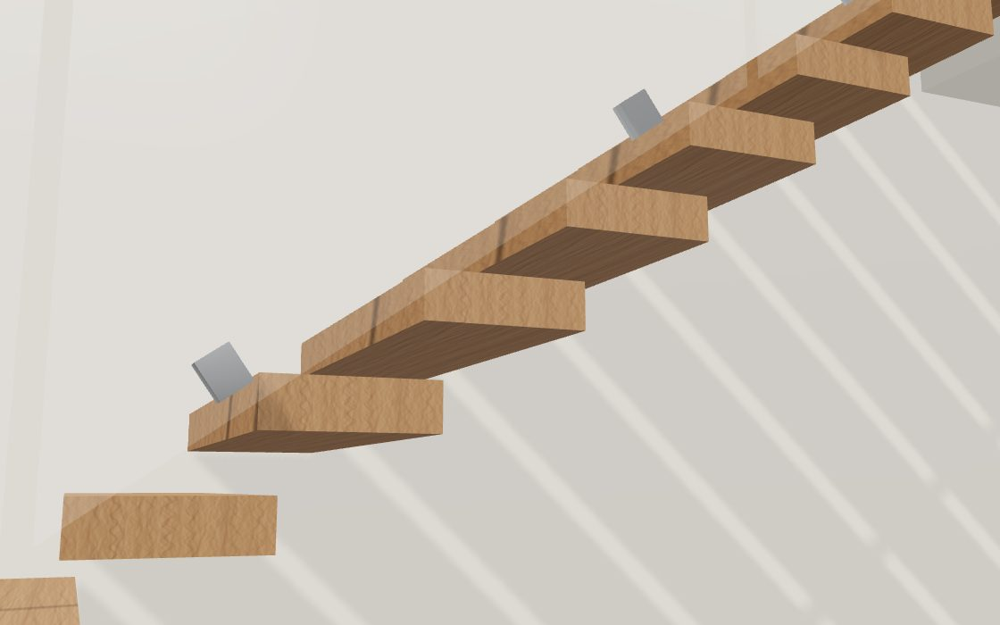
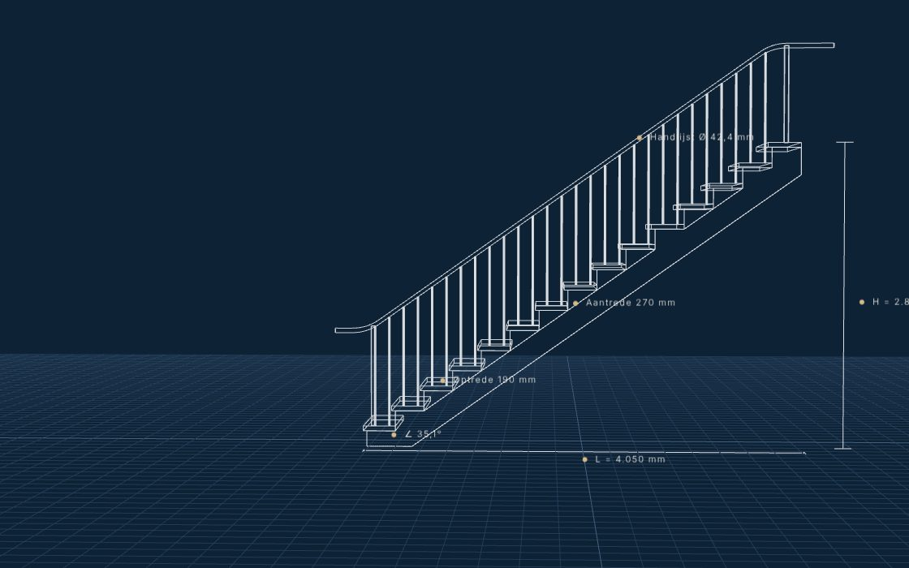
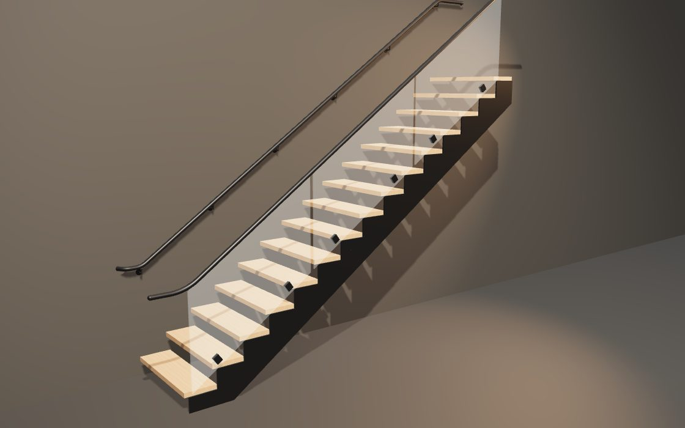

Concepten · 3D & scroll
Elke demo is een echte, interactieve 3D-scène. Tijdens het scrollen beweegt de camera langs trap en leuning, als in een film. Alles draait live in de browser, zonder video. Kies de richting die het best bij Valier past, of combineer er een paar.









